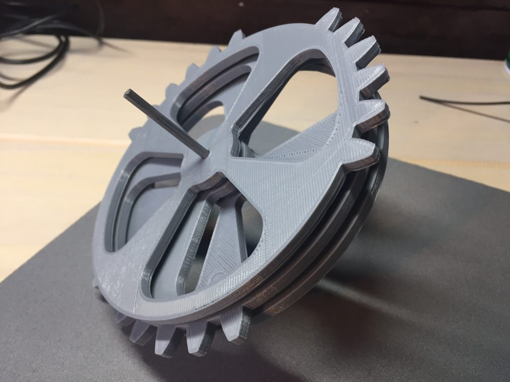
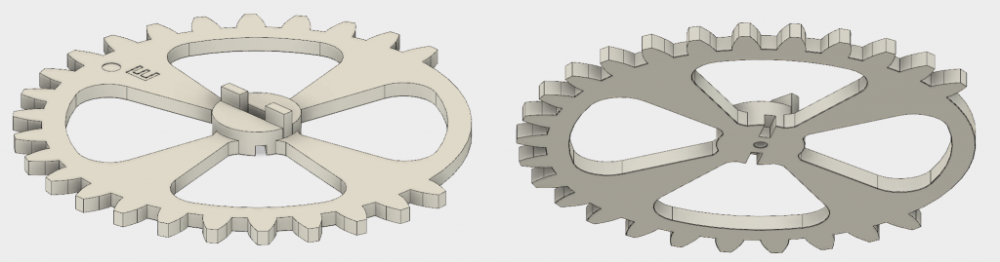
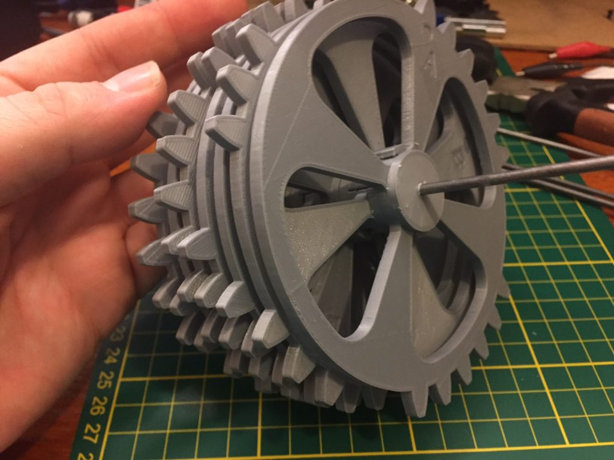
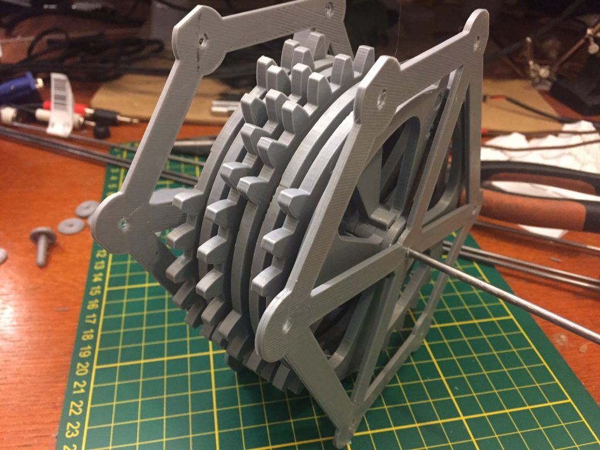
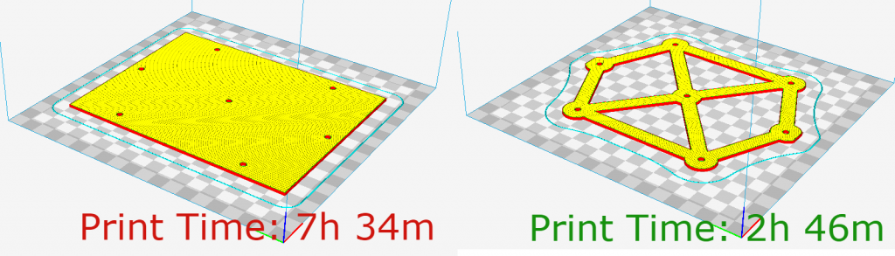

The heart of the seven segment display is the seven drive gears with select teeth, which share a common shaft and all rotate together. As I was developing the idea of the drive gears and conceiving of how the presence/lack of teeth could "signal" the arm gears to turn or not, I though of them as plain, 2-dimensional shapes. I had planned on spacing them out along their common shaft using 3D printed washers of a set thickness. As for aligning them at the appropriate relative rotation, I thought I might print a jig (some kind of tall internal gear) to hold all the drive gears in the right relationship. Then I would either affix the gears and washers with superglue, or drill an alignment hole through all 7 gears and insert a small alignment rod to maintain their orientation.
Here are the first three drive gears (A, B, C) with a 2mm-tall washer between each. Looking good!
But this is thinking like someone who only has access to subtraction manufacturing. Why carve out a hole and insert new material when we could print the holes and alignment rods as part of the gear themselves?
I took another pass through all the drive gears, and added two 3mm wide, 7mm long "pegs" to the front side of each one (except gear A, the front gear). I also carved out a matching "slot" in each gear to receive the pegs behind it, with 0.3mm of clearance in all dimensions. (0.3 is my standard clearance value when I want two mechanical parts to fit together with no problem at all - your experience may vary.) Additionally, I extruded the center portion of the gear an extra 3mm upward to eliminate the need for the spacing washers I'd previously planned on.
Here's the new E gear as an example:
You can see the two protruding rectangular "pegs" on the top that fit into the D gear, and the two similar slots on the bottom that receives the pegs of the F gear.
So, here's what all 7 interlocking gears look like on an axle:
I whipped up a couple of minimalist end-frames to hold the drive axle and the axles for the arm gears - with both front and back in place, the mechanism is starting to take shape:
These endframes are a good example of something I've noticed with mechanical objects and additive manufacturing - there are huge time paybacks for small investments in drafting time. I'd first conceived of these end-frames and simple, 2mm thick rectangles with 7 holes in them. Cura estimated that each of those plates would take around seven and a half hours to print. Oof! There goes the weekend. But another 15 minutes of casually cutting things away in Fusion360 and the resulting frame took about two hours and 45 minutes. That's ten hours of printing time saved with a quarter hour of drafting, a massive return on time invested.
Next step will be to re-print the pinion arm gears with appropriate axle holes, and then test fit the gears together. Here goes nothing.